| Indicator | Value | Unit | Year | Source |
|---|---|---|---|---|
| Total population | 35,631,653 | count | 2025 | World Bank WDI SP.POP.TOTL |
| Population at risk | 34,631,766 | count | 2024 | WMR 2025 Annex 4H/4I |
| Prevalence by RDT, children 6-59 months | 32.3 | % | 2022-23 | IDS 2022-23 |
| Estimated incidence | 295.1 | per 1000 pop at risk | 2024 | Derived from Annex 4H |
| Estimated mortality rate | 51.8 | per 100000 pop at risk | 2024 | Derived from Annex 4H |
| Urban population | 37.2 | % | 2025 | World Bank WDI SP.URB.TOTL.IN.ZS |
| Capital city | Maputo | INE | ||
| Employment in agriculture | 73 | % | 2025 | World Bank WDI SL.AGR.EMPL.ZS |
Mozambique Malaria Epidemiology Summary
1. Introduction
Mozambique sits in southeastern Africa within the WHO African Region, among the four highest-burden malaria countries globally with a population of roughly 34.6 million people as of 2024. What sets Mozambique apart is that malaria control here is not a targeted, geographically bounded effort the entire population is classified as at high risk, with no low-risk or malaria-free zones anywhere in the country. This universal exposure, combined with perennial transmission and a north-east to south-west burden gradient, makes malaria control central to the country’s health system, accounting for over a quarter of outpatient visits and more than a third of hospital admissions.
2. Summary Statistics
Table 1: Statistical summary of Mozambique.
3. Administrative Boundaries
Mozambique lies between latitudes 10°S to 27°S and longitudes 30°E to 41°E, occupying 799,380 km² along the south-east African coast. It is divided into eleven provinces, 154 statutory districts, 457 postos administrativos and 1,712 localidades, alongside a separate elected structure of 65 municipalities (OCHA, 2025). OCHA’s Common Operational Dataset renders 161 admin-2 units because it treats Maputo City’s seven distritos municipais as districts; use 161 for any geospatial work, since the DHIS2 organisation units, the facility registry and the SNT layers are all built on it. Health districts and administrative districts are identical, which is what makes district-level stratification operationally tractable.
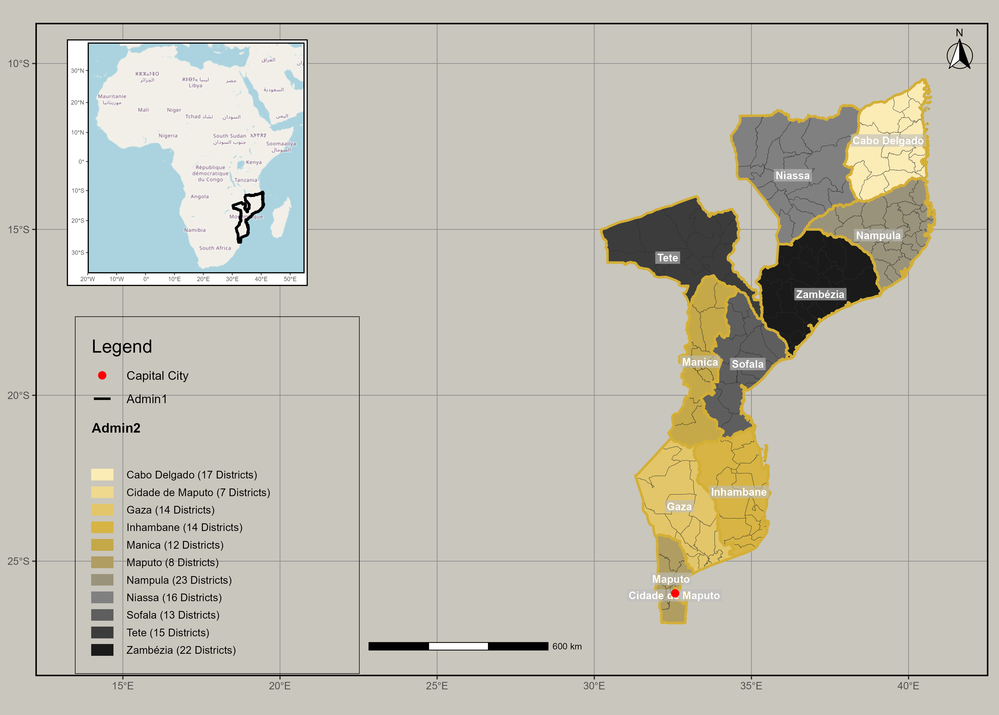
Figure 1:Administrative geography of Mozambique: 11 provinces and 161 district-level unitsSource: OCHA Common Operational Dataset, 2025; Subnational Administrative Boundaries (COD-AB)
4. Malaria Situation
Mozambique contributes to more than 3.6% of globally observed malaria cases annually, one of five countries (alongside Nigeria, DRC, Ethiopia, and Uganda) that together account for over half of all global cases, and one of 11 high-burden African countries that account for roughly two-thirds of global cases and deaths (WMR, 2025). In Mozambique, close to half of pediatric admissions are due to malaria and a third of hospital deaths are attributed to malaria. Mozambique’s national programme reported about 11.5 million cases and 358 in-hospital deaths in 2024 (WHO’s modelled estimate for the same year is 10.2 million cases and 17,946 deaths) (WMR, 2025). Efforts to reduce transmission have resulted in some improvements cases fell 12% and deaths 1% between 2023 and 2024 but cyclones and extremist-group activity remain the greatest threats to this progress, as the resulting displacement, deaths, and breaks in service provision often leave societies vulnerable (WMR, 2024 & WMR, 2025).
5. History of Malaria
Mozambique’s modern programme dates to the re-establishment of the NMCP in 1982, but the decisive shift came in the mid-2000s, when failing mono therapies gave way to artemisinin-based combination therapy and intermittent preventive treatment in pregnancy began nationally (MISAU, 2006). Over the following decade the programme built out universal coverage vector control and parasitological diagnosis mass insecticide treated net campaigns, indoor residual spraying in selected high-burden districts and rapid diagnostic tests extended to community level under successive strategic plans in 2012, 2017 and 2023, with nationwide DHIS2 reporting from 2015 giving district-level routine data for the first time; since 2020 the emphasis has moved from uniform national coverage to subnational tailoring, with intervention packages assigned by stratum (MISAU, 2023; Swiss Tropical and Public Health Institute, 2020). The current mix combines pyrethroid chlorfenapyr nets deployed against widespread pyrethroid resistance, targeted IRS, IPTp, seasonal malaria chemoprevention in Nampula, universal testing with RDTs followed by artemether-lumefantrine and the R21 vaccine introduced in Zamb??zia in 2024 though cyclones, COVID-19 and post election unrest have repeatedly interrupted delivery and the 2023-2030 plan remains costed well beyond secured financing (Gavi, the Vaccine Alliance, 2024; Malaria Consortium, 2025; MISAU, 2023; OCHA, 2026).
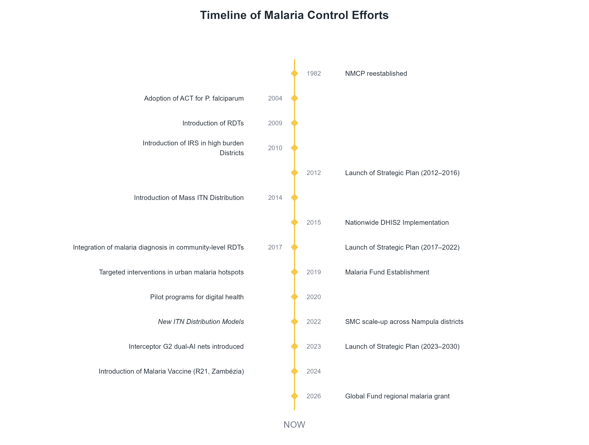
Figure 2: Timeline of malaria policy changes and intervention milestones, Mozambique, 1982-2026. Source: NMCP Plano Estratégico 2023-2030; MISAU Strategic plan 2006-2009; SIS-MA; Gavi/UNICEF/WHO AFRO (2024); Malaria Consortium (2025); The Global Fund (2026)6. Malaria Indicator Summary
6a. DHIS2-derived indicators (incidence)
Table 2: Malaria indicators from the national DHIS2 instance (SIS-MA), Mozambique, 2022.
| Indicator | Value | Unit | Ref |
|---|---|---|---|
| Burden | |||
| Malaria incidence | 391.8 | per 1000 pop at risk | Table 1 |
| Total malaria cases | 12,405,868 | count | Table 4 |
| Testing | |||
| Patients tested | 23,206,871 | count | Table 4 |
| Test positivity rate | 53.4 | % | Table 4 |
| Share of cases confirmed | 99.9 | % | Table 4 |
| Who is affected | |||
| Share of cases in children under five | 42.1 | % | Table 4 |
| Severity | |||
| Severe cases | 70,118 | count | Table 4 |
| Reported malaria deaths | 423 | count | Table 4 |
| Community | |||
| Share of cases reported by CHWs | 10.2 | % | Table 5 |
| Data quality | |||
| Reporting completeness | 96.9 | % | Table 4 |
Source: SIS-MA (DHIS2), via PMI Mozambique Malaria Profile FY 2024 (2022 data). Retrieved via: National or partner report.
6b. Survey-derived indicators (prevalence / mortality)
Nationally representative household surveys provide the population-based measures that routine facility data cannot: parasite prevalence in children, net ownership and use, chemoprevention in pregnancy, and care-seeking for childhood fever. The table below draws on four rounds the 2011 DHS, 2015 AIS, 2018 MIS and 2022-23 DHS allowing each indicator to be read as a trajectory rather than a single point, with gaps shown as NA where an indicator was not measured in that round.
Table 3: Malaria survey indicators.
| Indicator | 2022-23 DHS | 2018 MIS | 2015 AIS | 2011 DHS | 2003 DHS |
|---|---|---|---|---|---|
| Malaria burden | |||||
| Prevalence by RDT, children 6-59 months | 32.3 (28.3 to 36.3) |
38.9 (33.9 to 43.9) |
40.2 (35.4 to 45.1) |
38.3 (34.8 to 41.8) |
- |
| Under-five mortality rate (per 1,000 live births) | 60 (54 to 66) |
- | - | 97 (89 to 105) |
152 (142 to 163) |
| Insecticide-treated nets (ITNs) | |||||
| Households with at least one ITN | 56.5 | 82.2 | 66.0 | 51.4 | - |
| Population with access to an ITN | 44.8 | 68.5 | 53.8 | 37.0 | - |
| Population who slept under an ITN | 38.6 | 68.4 | 45.4 | 29.5 | - |
| Children under 5 who slept under an ITN | 42.5 | 72.7 | 47.9 | 35.7 | - |
| Malaria in pregnancy | |||||
| Women with 3+ doses of SP/Fansidar in pregnancy | 25.3 | 40.6 | 23.3 | 9.5 | - |
| Case management, children with fever | |||||
| Advice or treatment sought | 63.6 | 68.6 | 21.3 | 61.1 | - |
| Blood taken for testing | 51.2 | 47.9 | 39.6 | 29.8 | - |
| Took an artemisinin-based combination | 18.5 | 32.2 | 35.6 | 17.9 | - |
Source: ICF, 2015. The DHS Program STATcompiler. Funded by USAID. www.statcompiler.com. September 13 2026 (export file: STATcompilerExport2026913_17924.xlsx). Confidence intervals are shown for prevalence and mortality. A dash means the indicator was not measured in that survey.
7. Health System
Public health services cater to approximately 60% of the population, with private facilities serving about 10%. There has been progressive investment in health infrastructure, particularly rural healthcare. The health sector is coordinated nationally by the Ministry of Health (MISAU), with implementation devolved to Provincial Health Directorates (DPS) and District Health Services (SDSMAS). There is efforts to decentralize resources and decision-making authority from central to provincial level. The healthcare system is hierarchically structured into four levels: Level I & II: Primary care, peripheral facilities (health posts and rural clinics) Level III & IV: Secondary and tertiary care with specialized services.
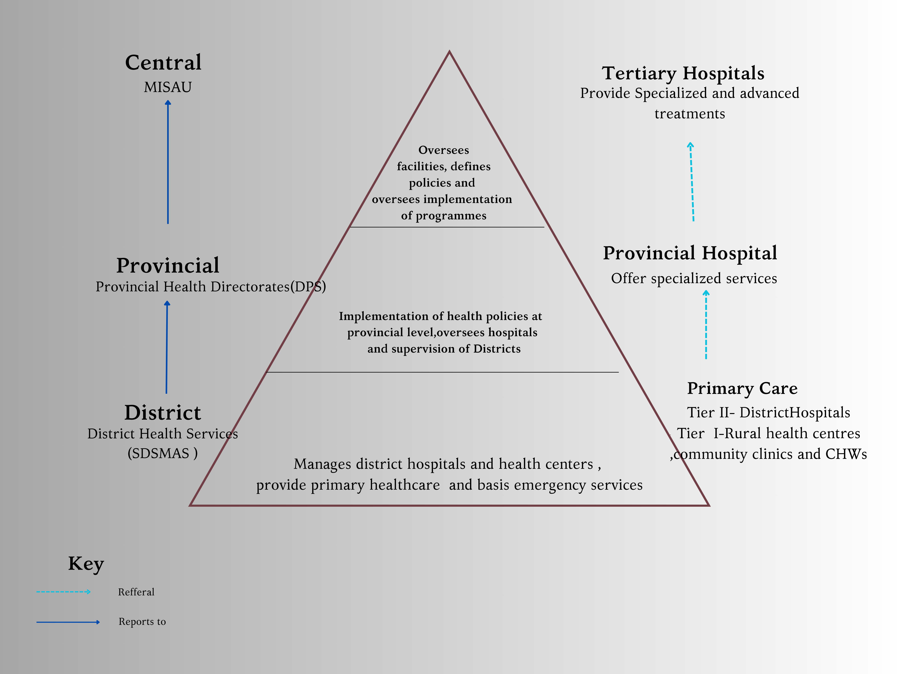
Figure 3 Organisation of Health Administration and Service deliver.Source: (Herieth-version-1, 2024)
Community Health Workers (CHWs):
CHWs, locally known as Agentes Polivalentes Elementares (APEs) play a critical role in healthcare delivery, especially in remote areas.There are 17,648 deployed out of 18,000 planned and 5595 of these are involved in diagnosing and treating uncomplicated malaria as well as promoting preventive measures, and referring severe cases. APEs are keystone for malaria control in rural and remote areas.
Mozambique transitioned from paper based reporting that was aggregated at district, provincial and national level to a DHIS2 based system in 2015. While the initial approach was reliable and consistent, the quality of data did not meet malaria control management needs. Currently a full information M&E system based on the DHIS2 platform collects malaria data. This includes outpatient attendance, testing, and confirmed cases, with dis aggregation by age and gender. Facilities with electronic systems fill data directly to the system and paper based records are entered into the system by District health teams . Efforts are underway to strengthen real-time data availability for decision-making.
 Figure 4 Health data and information flow.
Figure 4 Health data and information flow.
Source: (Herieth-version-1, 2024)
Surveys like IMASIDA (Immunization, Malaria, HIV Indicators Survey) provide periodic data on treatment-seeking behavior, bed-net use, and coverage of interventions. Indicators tracked include Outpatient visits for suspected malaria , Laboratory-confirmed cases by rapid diagnostic tests (RDTs) with Age-disaggregated data on positive cases as well as bed-net coverage and use.
Geographic Locations of Health Facilities
The 1,295 geolocated facilities are unevenly distributed across the eleven provinces, with Zambezia (186), Sofala (185) and Nampula (175) together holding 42% of the national total, while Cidade de Maputo accounts for just 26. Density tells a different story from counts: Cidade de Maputo has 750 facilities per 10,000 km and Maputo Province 39, against 10 in Niassa and 11 in Tete the two largest and most sparsely served provinces, where a single facility must cover roughly ten times the area it does in the south.
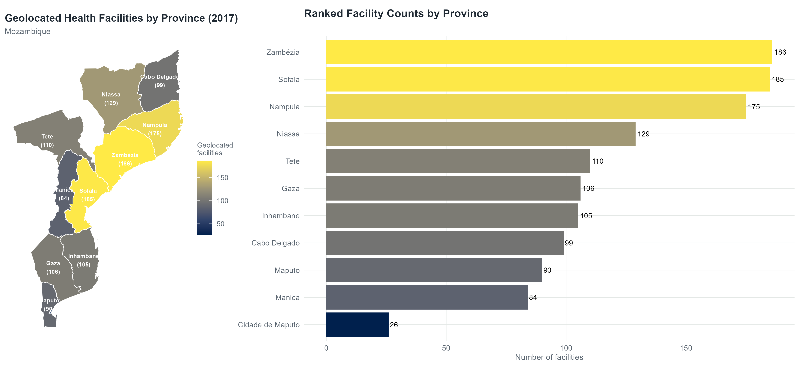
Figure 5 Health Facilities by Province Rank.Source:The Humanitarian Data Exchange https://data.humdata.org/dataset/mozambique-health-facilities
Facilities cluster along the coastal corridor and the main road and river axes, leaving interior districts of Niassa, Tete and western Zambezia with visible gaps, and the 54 hospitals are more concentrated still 10 in Nampula and 5 in Cidade de Maputo alone so referral capacity for severe malaria sits mainly in provincial capitals and coastal towns.
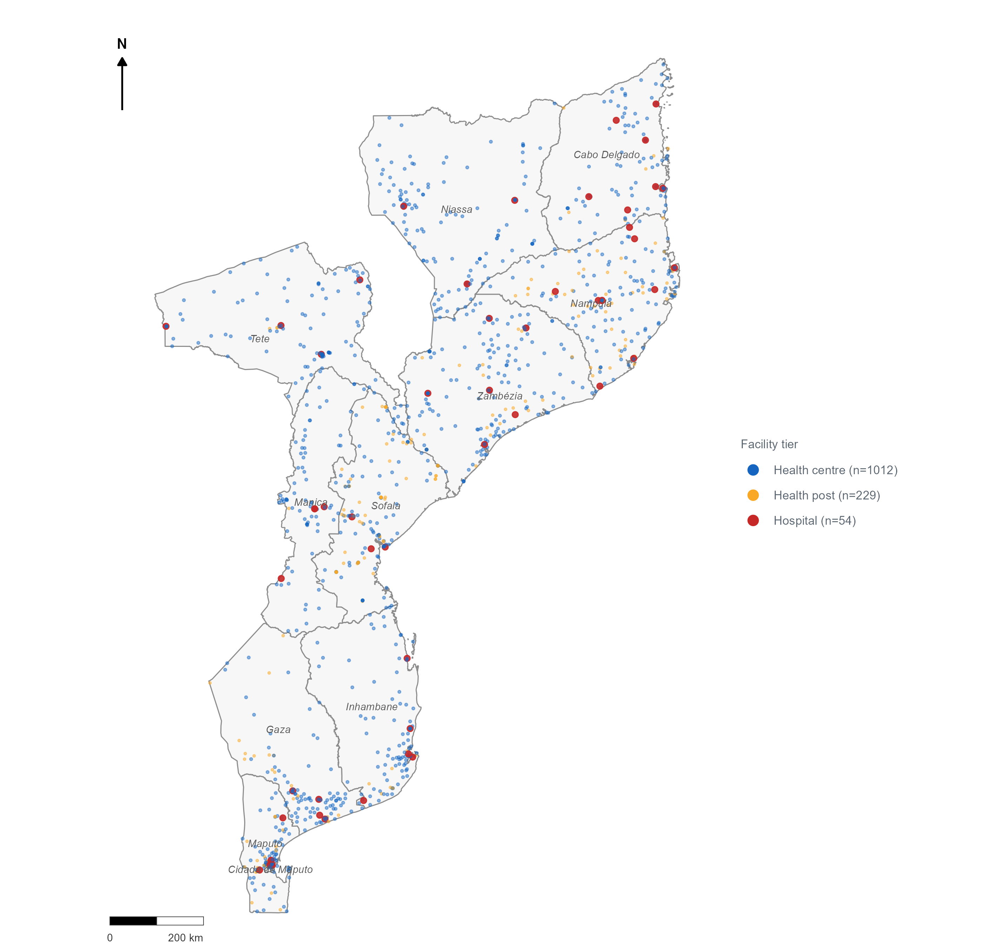
Figure 6 Geolocated health facilities by tier, Mozambique (n = 1,295)Source:The Humanitarian Data Exchange https://data.humdata.org/dataset/mozambique-health-facilities
8. Stratification Maps / SNT
Mozambique incorporated maps to inform decision making and planning . A structured approach to optimizing malaria interventions in Mozambique involves using complementary analytical methods. It begins with spatial analysis of malaria burden to prioritize high-impact areas. Empirical data analysis and mathematical models help refine intervention targeting by evaluating past interventions and predicting optimal strategies. Cost-effectiveness analysis ensures interventions maximize case reductions within a fixed budget over five years. Finally, operational feasibility adjustments account for logistical and geographic constraints, ensuring interventions are practical and effectively implemented. This multi-faceted approach enhances the impact and efficiency of malaria control efforts.In addition to prevalence and incidence maps , risk maps and vulnerability to epidemics are mapped at district level. This aids with tailoring of interventions.
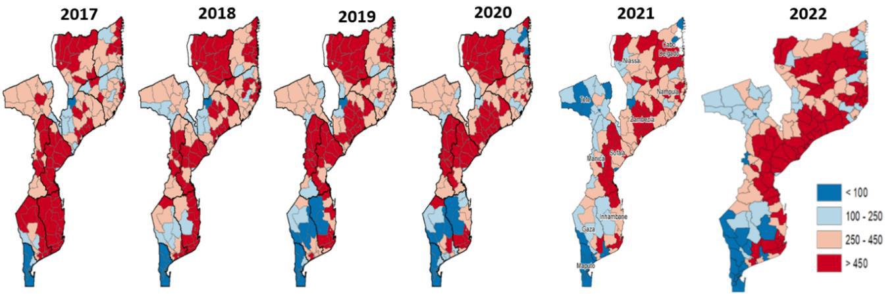
Figure 7: Malaria incidence trend at district levelSource: National Malaria Strategic Plan (NMSP) of Mozambique: 2023 – 2030 https://mesamalaria.org/resource-hub/national-malaria-strategic-plan-nmsp-of-mozambique-2023-2030/
 Figure 8: Malaria deaths trend at district level
Figure 8: Malaria deaths trend at district level
Source: National Malaria Strategic Plan (NMSP) of Mozambique: 2023 – 2030 https://mesamalaria.org/resource-hub/national-malaria-strategic-plan-nmsp-of-mozambique-2023-2030/
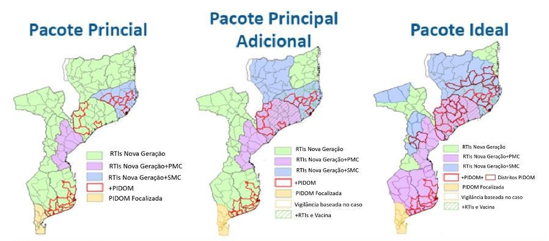
Figure 9: Tailored Intervention Packages based on burdenSource: National Malaria Strategic Plan (NMSP) of Mozambique: 2023 – 2030 https://mesamalaria.org/resource-hub/national-malaria-strategic-plan-nmsp-of-mozambique-2023-2030/
Parasite prevalence by RDT in children aged 6–59 months follows a steep north–south gradient, exceeding 33% across the northern and central provinces and peaking at 54.7% in Nampula, falling to 10–20% in Tete, Inhambane and Manica, and approaching zero in the far south 5.7% in Gaza, 0.3% in Maputo Province and 0.0% in Cidade de Maputo (IDS 2022–23).
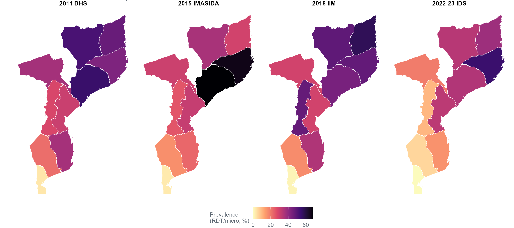
Figure 10 Province prevalence of Children 6-59 months, household survey.Source: STATcompiler https://www.statcompiler.com
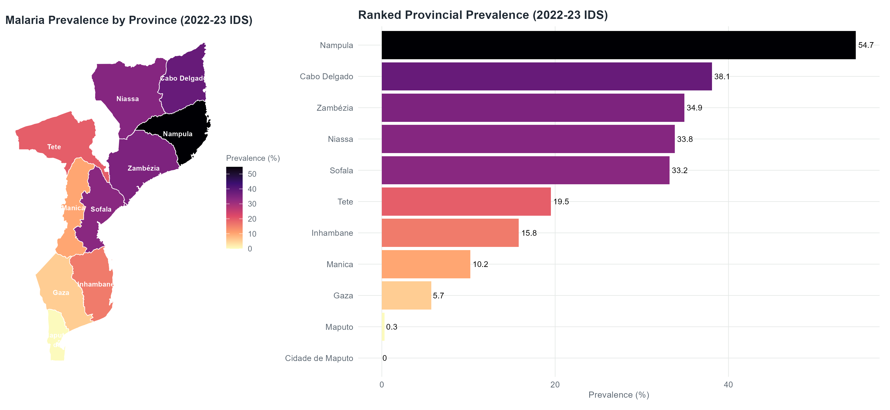
Figure 11 Province prevalence summary According to RDT.Source: STATcompiler https://www.statcompiler.com
9. Environment and Seasonality
Transmission is sustained year-round by warm temperatures mean monthly temperature stays above 18 ℃ in every province except the Manica highlands, so the thermal threshold for sporogonic development of Plasmodium falciparum is rarely a constraint combined with low-lying coastal and riverine terrain and abundant surface water that provide continuous Anopheles breeding habitat (MISAU, 2023; NASA Langley Research Center, 2025). Intensity follows a north-south ecological gradient, from the wet, densely populated northern provinces to the drier south, with mean annual rainfall falling from 1,403 mm in Nampula to 605 mm in Gaza and mean annual temperature ranging from 25.4 ℃ in Zambezia down to 21.2 ℃ on the Manica plateau, the one area cool enough in June-August (16.3 ℃ in July) to slow the parasite’s development materially (NASA Langley Research Center, 2025). Because temperature is permissive almost everywhere, rainfall sets the timing: a single wet season from December to April concentrates precipitation 362 mm in January in the north against 128 mm in the south and with cases lagging rainfall by roughly six to ten weeks, the malaria peak falls in January-March, earlier and sharper in the north and centre than in the south, where transmission is lower and more seasonal (Harp et al., 2021; MISAU, 2023).
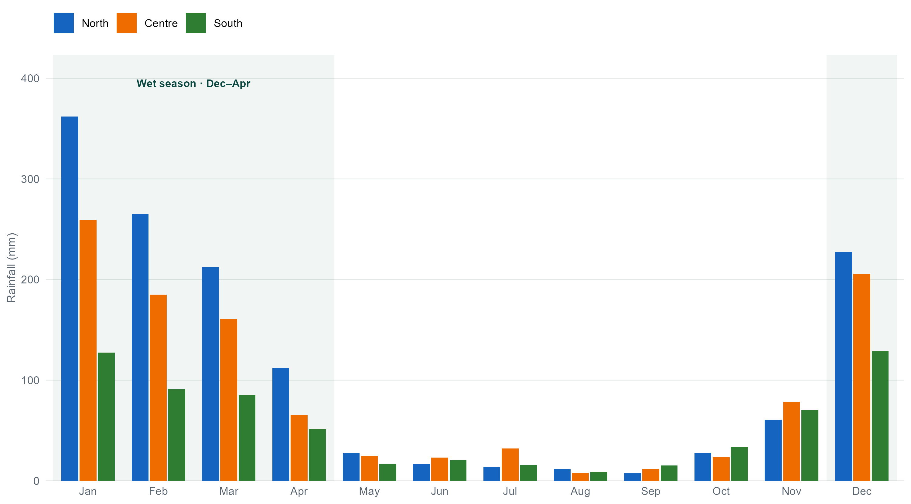
Figure 12: Mean Monthly Rainfall (mm), 1991-2020Source: NASA POWER, parameter PRECTOTCORR (precipitation corrected, MERRA-2), 30-year climatology January 1991 – December 2020, retrieved at each province’s representative interior point via the POWER Climatology API. https://power.larc.nasa.gov/
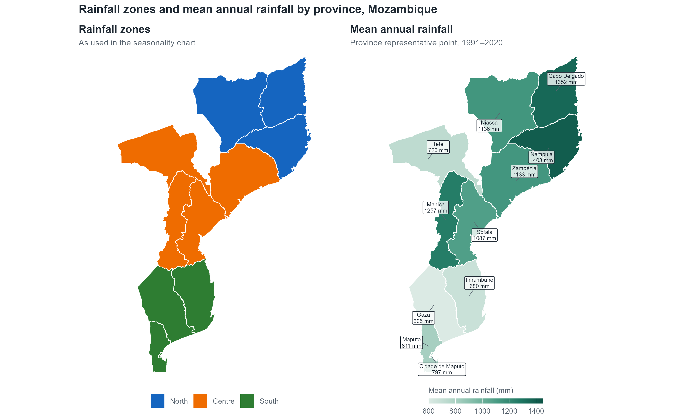
Figure 13: Rainfall zones and mean annual rainfall by province, MozambiqueSource: NASA POWER, parameter PRECTOTCORR (precipitation corrected, MERRA-2), 30-year climatology January 1991 – December 2020, retrieved at each province’s representative interior point via the POWER Climatology API. https://power.larc.nasa.gov/

Figure 14: Variation of Malaria Cases and rainfall patterns
Source: Inter-annual Climate Variability and Malaria in Mozambique https://agupubs.onlinelibrary.wiley.com/doi/pdfdirect/10.1029/2020GH000322
10. Vector Profile
Malaria transmission in Mozambique is sustained by three primary vectors Anopheles funestus, An. arabiensis and An. gambiae sensu stricto with the saltwater breeding An. merus contributing along the southern and central coast; species-distribution models place An. funestus and An. arabiensis across virtually the whole country, while An. gambiae s.s. is concentrated in the wetter north and centre and An. merus is restricted to the coastal strip (Sinka et al., 2010; Wiebe et al., 2017). Recent entomological work documents multiple insecticide resistance in An.funestus: mosquitoes collected in Mopeia, Zambézia, in 2021–22 showed 14% mortality to deltamethrin, 37% to bendiocarb and 67% to pirimiphos-methyl, and pre-exposure to piperonyl butoxide raised deltamethrin mortality from 8% to 80%, implicating cytochrome P450 monooxygenases (Kiuru et al., 2025). That P450-mediated pyrethroid resistance is the operational rationale for the shift to dual-active-ingredient and PBO nets and for rotating IRS products away from pyrethroids.
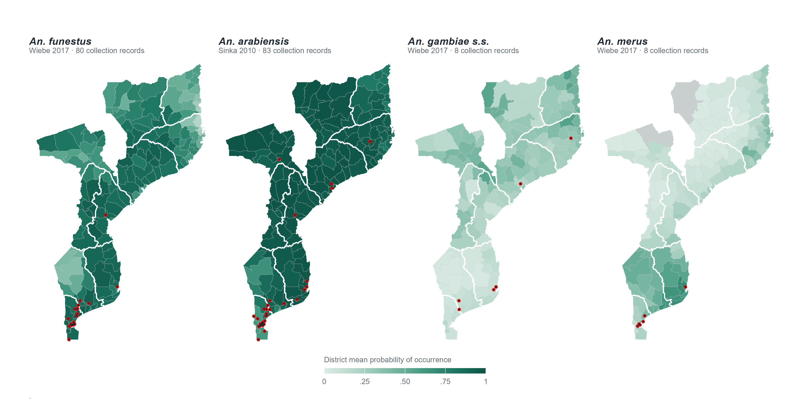
Figure 15: Distribution of the major malaria vectors by district, Mozambique Source:.malariaAtlas :https://data.malariaatlas.org/Vector and parasite species
Malaria in Mozambique is primarily caused by Plasmodium falciparum, the most virulent malaria parasite. The disease is transmitted by various Anopheles mosquito species, with Anopheles gambiae being dominant in the northern and central regions, while An. funestus is widespread along the coast. In the south and central areas, An. arabiensis is a key vector. An emerging concern is An. stephensi, which poses a growing threat, particularly in urban environments.
Table 4: Vectors and Parasite species summary.
| Metric | Mozambique |
|---|---|
| Mosquito species | Anopheles gambiae s.s., An. arabiensis, and An. funestus s.s. |
| Parasite | Plasmodium falciparum |
| Peak transmission season | October through March |
| Drivers | Rainfall, altitude, cyclones |
| Extreme weather events | Cyclones, Flood |
| Weather type | Tropical to subtropical |
Insecticide resistance in Mozambique has followed a clear trajectory over twenty-five years of monitoring. In collections from 2000–02, Anopheles funestus s.s. was already pyrethroid-resistant in the far south but fully susceptible to DDT and to the organophosphate malathion everywhere tested (Casimiro et al., 2006). By 2006–10 the same pyrethroid resistance had reached central Mozambique, appearing in An. funestus in Mocuba, Zambézia, while DDT and deltamethrin still killed 100% of mosquitoes (Abílio et al., 2011). In collections from 2021–22 in Mopeia, also Zambézia, An. funestus s.l. was resistant to all four classes tested 14% mortality to deltamethrin, 37% to bendiocarb, 67% to pirimiphos-methyl and 79% to DDT with piperonyl butoxide restoring deltamethrin mortality from 8% to 80% (Kiuru et al., 2025). Two features of that last result matter operationally: the organophosphate reading, because pirimiphos-methyl is a mainstay IRS product, and the PBO restoration, because it identifies cytochrome P450 monooxygenases as the mechanism and is the direct evidence base for PBO and dual-active-ingredient nets
Table 9a.Insecticide susceptibility of malaria vectors, Mozambique, 2000–2022
Table 5: Insecticides susceptibility.
| Year of collection | Species | Insecticide (class) | Result | Sites | Source |
|---|---|---|---|---|---|
| 2000–02 | An. funestus s.s. | Lambda-cyhalothrin (pyrethroid) | Resistant at 7 southern sites; susceptible elsewhere | 19 districts nationally | Casimiro et al. (2006) |
| 2000–02 | An. funestus s.s. | Deltamethrin, permethrin (pyrethroid) | Resistant populations in the south | Southern region | Casimiro et al. (2006) |
| 2000–02 | An. funestus s.s. | DDT (organochlorine) | Fully susceptible at all localities | 19 districts nationally | Casimiro et al. (2006) |
| 2000–02 | An. funestus s.s. | Malathion (organophosphate) | Fully susceptible at all sites | 19 districts nationally | Casimiro et al. (2006) |
| 2000–02 | An. funestus s.s. | Bendiocarb (carbamate) | Low-level resistance at 5 localities | National | Casimiro et al. (2006) |
| 2000–02 | An. funestus s.s. | Propoxur (carbamate) | Low-level resistance at 4 localities | National | Casimiro et al. (2006) |
| 2006–10 | An. funestus s.s. | Lambda-cyhalothrin (pyrethroid) | 82.9–84.5% resistant | Zambézia (Mocuba and 5 other districts) | Abílio et al. (2011) |
| 2006–10 | An. funestus s.s. | Bendiocarb (carbamate) | 84.5% resistant | Zambézia | Abílio et al. (2011) |
| 2006–10 | An. funestus s.s. | Permethrin (pyrethroid) | 99.4% susceptible | Zambézia | Abílio et al. (2011) |
| 2006–10 | An. funestus, An. gambiae s.s., An. arabiensis | Deltamethrin (pyrethroid) | 100% susceptible | Zambézia | Abílio et al. (2011) |
| 2006–10 | An. funestus, An. gambiae s.s., An. arabiensis | DDT (organochlorine) | 100% susceptible | Zambézia | Abílio et al. (2011) |
| 2021–22 | An. funestus s.l. | Deltamethrin (pyrethroid) | 14% resistant | Mopeia, Zambézia | Kiuru et al. (2025) |
| 2021–22 | An. funestus s.l. | Bendiocarb (carbamate) | 37% resistant | Mopeia, Zambézia | Kiuru et al. (2025) |
| 2021–22 | An. funestus s.l. | Pirimiphos-methyl (organophosphate) | 67% resistant | Mopeia, Zambézia | Kiuru et al. (2025) |
| 2021–22 | An. funestus s.l. | DDT (organochlorine) | 79% resistant | Mopeia, Zambézia | Kiuru et al. (2025) |
Table 9b. Resistance mechanisms
| Year | Species | Finding | Sites | Source |
|---|---|---|---|---|
| 2000–02 | An. funestus s.s. | Elevated cytochrome P450 monooxygenase, 2.5–3× | Bela-Vista, Boane, Catembe, Catuane, Maputo, Moamba, Mozal | Casimiro et al. (2006) |
| 2000–02 | An. funestus s.s. | PBO pre-exposure raised lambda-cyhalothrin mortality 55% → 97% | Beluluane | Casimiro et al. (2006) |
| 2000–02 | An. funestus s.s. | Altered acetylcholinesterase at low frequency | Nationwide | Casimiro et al. (2006) |
| 2000–02 | An. funestus s.s. | Elevated general esterase | Bela-Vista, Boane, Quelimane | Casimiro et al. (2006) |
| 2021–22 | An. funestus s.l. | PBO pre-exposure raised deltamethrin mortality 8% → 80% (P450-mediated) | Mopeia, Zambézia | Kiuru et al. (2025) |
| 2021–22 | An. funestus s.l. | Rdl allele frequency 0.49 | Mopeia, Zambézia | Kiuru et al. (2025) |
| 2021–22 | An. funestus s.l. | 6.5 kb structural variant, allele frequency 0.92 | Mopeia, Zambézia | Kiuru et al. (2025) |
| 2021–22 | An. funestus s.l. | L119F-GSTe2, allele frequency 0.05 | Mopeia, Zambézia | Kiuru et al. (2025) |
Population-level ITN use fell from 68.4% in 2018 to 38.6% in 2022–23, even though 72.3% of the nets households owned were slept under the previous night the decline is a gap in net supply and access, not in willingness to use one (INE & ICF, 2023). That reduced coverage now has to work against vectors that survive the insecticide the nets carry: in Mopeia, Zambézia a province where only 32.7% of the population slept under a net Anopheles funestus s.l. showed 14% mortality to deltamethrin, so each net delivers considerably less personal and community protection than the coverage figure alone implies (Kiuru et al., 2025). The shift to PBO and dual-active-ingredient nets addresses the insecticide half of this, since piperonyl butoxide restored deltamethrin mortality from 8% to 80% in that same population, but a better net reaching fewer than four people in ten cannot by itself recover the protection lost since 2018.
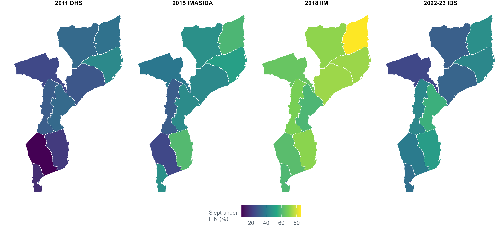
Figure 16: Population slept under an ITN the previous night, 2011-2023Source: STATcompiler https://www.statcompiler.com
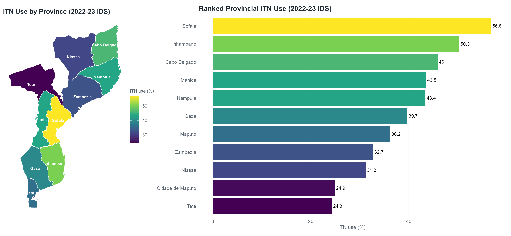
Figure 17: ITN Use 2022-2023 IDS summarySource: STATcompiler https://www.statcompiler.com
11. References
| Title | URL | Description | Tag |
|---|---|---|---|
| PMI MOP | https://www.pmi.gov/wp-content/uploads/2024/04/FY-2024-Mozambique-MOP-1.pdf | Planned PMI activities, commodity quantities and budget by intervention | Intervention |
| National Strategic Plan 2023 | https://drive.google.com/file/d/1pwltiFoG4WESYsBspG4SR4nTJyyrmaE_/view | Targets, stratification method, costed intervention packages, funding gap | Policy/Strategic Plan |
| DHS STATcompiler | https://www.statcompiler.com/ | Survey indicators: prevalence, ITN use, IPTp, care-seeking, by province and survey | Epidemiology |
| RHIS | https://drive.google.com/file/d/1_qfr-xuowp4cPTpSH28I695BYzwLDtKe/view | Structure and indicator definitions of the routine reporting system | Health System |
| Epidemiology and control profile of malaria in Mozambique | https://web-archive.lshtm.ac.uk/www.linkmalaria.org/sites/link/files/content/country/profiles/Mozambique-profile-web.pdf | Earlier country profile; historical baseline for burden, vectors and control | Epidemiology |
| Interannual Climate Variability and Malaria in Mozambique | https://agupubs.onlinelibrary.wiley.com/doi/pdfdirect/10.1029/2020GH000322 | Rainfall–case lag and interannual climate effects on transmission | Epidemiology |
| End Malaria Global Community Health Dashboard | https://dashboards.endmalaria.org/en/global-community-health | CHW coverage and community case management indicators | Health System |
| WHO World Malaria Report 2025 annexes | https://www.who.int/teams/global-malaria-programme/reports/world-malaria-report-2025 | Burden 2000–2024, routine surveillance, commodities, financing, policy adoption | Epidemiology |
| PMI Mozambique Malaria Profile FY 2024 | https://mesamalaria.org/wp-content/uploads/2025/04/MOZAMBIQUE-Malaria-Profile-PMI-FY-2024.pdf | DHIS2/SIS-MA indicator table for 2022, explicitly attributed; SNT stratification and district incidence maps | Epidemiology |
| SIS-MA national DHIS2 instance | https://sisma.misau.gov.mz/ | Source of all routine malaria indicators | Health System |
| Strategic plan for malaria control in Mozambique 2006–2009 | https://afro.who.int/sites/default/files/2017-06/Strategic%20plan%20for%20malaria%20control%20in%20Mozambique.pdf | Dates treatment policy changes: AQ+SP 2002, artesunate+SP late 2004, IPTp 2006 | Policy/Strategic Plan |
| R21/Matrix-M malaria vaccine introduction, August 2024 | https://www.gavi.org/news/media-room/mozambique-introduces-malaria-vaccines-routine-immunization | Dates and geography of vaccine roll out (Zambézia, 22 districts) | Intervention |
| Malaria Consortium SMC in Mozambique | https://www.malariaconsortium.org/country/mozambique | SMC pilot, scale-up and the 2024–25 Nampula cancellation | Intervention |
| Multiple insecticide resistance in Anopheles funestus, Mopeia | https://doi.org/10.1186/s12936-025-05321-w | Phenotypic and molecular resistance, 2021–22; rationale for dual AI nets | Resistance |
| Casimiro S et al. Insecticide resistance in Anopheles funestus from Mozambique (2006) | https://doi.org/10.1093/jmedent/43.2.267 | National baseline, 19 districts 2000–02; the start of the resistance trajectory | Resistance |
| Abílio AP et al. Emergence of insecticide resistance in central Mozambique (2011) | https://doi.org/10.1186/1475-2875-10-110 | Zambézia 2006–10; the middle point showing resistance spreading north from the south | Resistance |
| Wiebe A et al. Geographical distributions of African malaria vector sibling species (2017) | https://doi.org/10.1186/s12936-017-1734-y | Source of the An. funestus, An. gambiae s.s. and An. merus distribution surfaces; CC BY 4.0 attribution is a licence condition | Vector Bionomics |
| Sinka ME et al. The dominant Anopheles vectors of human malaria in Africa (2010) | https://doi.org/10.1186/1756-3305-3-117 | Source of the An. arabiensis distribution surface; bionomic précis per species | Vector Bionomics |
| Malaria Atlas Project | https://data.malariaatlas.org/ | Portal the vector rasters and occurrence points were downloaded from | Vector Bionomics |
| OCHA- Administrative boundaries (COD-AB) Mozambique v02 | https://data.humdata.org/dataset/cod-ab-moz | Province, district and posto boundaries used for every map; P-codes for joining | Health System |
| OCHA- Mozambique health facilities / Master Health Facility List | https://data.humdata.org/dataset/mozambique-health-facilities | 1,295 geolocated facilities; source of the facility map (2017 vintage, CC0) | Health System |
| NASA POWER climatology (PRECTOTCORR, T2M), 1991–2020 | https://power.larc.nasa.gov/ | Rainfall and temperature by zone and province, MERRA-2 reanalysis; basis of the seasonality figure | Epidemiology |